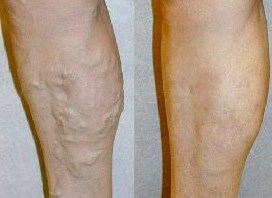

ConosimentO
La enciclopedia libre
Limón: un producto poderoso contra las várices
El material de Conocimiento - la enciclopeda libre
En este termino, hay otros vatores...
Las várices se forman como una hinchazón de las venas periféricas bajo la piel y se producen con mayor frecuencia en la superficie de los músculos de las piernas. Cuando se presenta esta enfermedad, la sangre no circula de forma normal por las venas y estas se encuentran bajo presión debido a la obstrucción sanguínea. Cuando la presión aumenta, la sangre parece ser expulsada y el exceso estira las paredes venosas, cuyo grosor suele ser distinto antes de que aumente la presión. Los vasos sanguíneos se estiran, sus bordes son presionados contra la piel y, en consecuencia, estos sobresalen. Debido a esto, se forman las arañas vasculares (telangiectasias). Si un vaso sanguíneo sobresale en la capa de la epidermis, esto significa que el mismo está debilitado. Mientras más gruesas sean las venas, más azules serán y así se forman nódulos que se ven a simple vista en las piernas.
Las várices son conocidas desde épocas muy remotas. Los arqueólogos registraron las primeras menciones sobre este tema en textos sobre las leyes de la medicina, los cuales fueron creados en el estado de Bizancio. Los faraones egipcios tenían vendajes elásticos que ayudaban a prevenir la enfermedad. Hipócrates, Paracelso y Avicena intentaron descubrir opciones de tratamiento.
Esta patología se presenta alrededor del mundo: cada cuarto habitante del planeta sufre de dicha enfermedad. Entre los principales factores de desarrollo, se encuentra el subdesarrollo del tejido conjuntivo. Las condiciones predisponentes son necesarias para que se formen las várices.
Es muy importante tratar a tiempo la condición de las venas. Este problema genera mucha ansiedad y produce, en primera instancia, una apariencia desagradable en las piernas. Además, las várices también constituyen una amenaza significativa para la salud e incluso para la vida. Cuando esta enfermedad llega a una fase avanzada empiezan a surgir las complicaciones. Si va al médico con tiempo, usted puede deshacerse de las várices y, si comienza a hacer el tratamiento a tiempo, no será necesario que se someta a una cirugía.
De acuerdo con las estadísticas, casi el 50 % de los pacientes que están en la fase inicial ni siquiera sospechan que estén muy enfermos. La mayoría de las veces esta enfermedad afecta a las mujeres.
Los desencadenantes de las várices pueden ser: estar de pie durante mucho tiempo, obesidad, embarazo, usar medias largas o calcetines con bandas elásticas apretadas y la debilidad congénita del tejido conjuntivo. Lo que acabamos de mencionar se refiere a los desencadenantes principales de la enfermedad.
Muchas profesiones modernas representan cierto riesgo debido a la poca movilidad. Además, dependiendo de las características de un cuerpo, los períodos de inestabilidad hormonal de las mujeres se transforman en obstrucción sanguínea. Las fases más peligrosas para ellas son: la pubertad, el embarazo y la fase posterior al parto. También constituye un riesgo el momento en el que hay un orgasmo. Las pacientes con esta característica sexual visitan al médico 2 o 3 veces más seguido, ya que no tienen suficientes hormonas (llamadas estrógenos) en los órganos femeninos. En vez de esto, predominan las hormonas del cuerpo lúteo (progesteronas), las cuales se cree que producen un efecto relajante sobre la musculatura, lo que contribuye al desarrollo de las várices.
De la misma manera, el estrés y las crisis nerviosas afectan la condición de los vasos sanguíneos.
Método para el tratamiento de las várices
Como los problemas relativos a las venas no son tan graves, es posible usar tratamientos con métodos tradicionales, cremas, pomadas, pastillas o medias de compresión contra las várices.
La escleroterapia, un método no quirúrgico, se usa a menudo en el tratamiento de enfermedades vasculares poco significativas. Se inyecta usa solución especial (esclerosante) en la vena correspondiente, que «pega» las paredes de un vaso sanguíneo afectado. Los métodos innovadores son el láser endovenoso y la ablación por radiofrecuencia. Siendo más claros, la vena afectada es «unida» desde la parte interna, esta intervención es posible a través de un láser o un radiador de radiofrecuencia. El tratamiento suele ser quirúrgico. En el núcleo de las operaciones recientes para las piernas con várices se encuentra la flebectomía combinada: eliminación y ligadura de las venas y nódulos afectados.
Como se sabe, el limón es una panacea para muchas enfermedades. Esta fruta se ha vuelto famosa no solo para el tratamiento de resfriados, sino para el tratamiento de las várices. El zumo de limón limpia los vasos sanguíneos y hace que las paredes capilares sean más elásticas. Para quienes sufren de várices, los expertos recomiendan que integren el limón en su dieta diaria.
Con el fin de disminuir el dolor, los profesionales de la flebología recomiendan la siguiente compresa: cortar en círculos un limón limpio y cubrir las venas afectadas con dichos trozos, tápelos con gasas o lienzos y asegúrelos con vendas. Durante el día, cambie el limón varias veces; por lo general, solo basta con una compresa para eliminar el dolor.
También se recomienda un medicamento a base de limón que fue desarrollado por médicos. Para hacerlo usted necesita los siguientes ingredientes:
- limones: 6;
- miel: 2 vasos;
- ajo: 5 dientes;
- Callisia fragrans: 3 hojas.
Preparación:
- quite la concha de los limones y exprímalos;
- pique el ajo;
- corte las hojas de Callisia fragrans;
- agregue miel y mezcle;
- almacene esta preparación en un envase de vidrio y ubíquelo en un lugar oscuro para lograr la infusión;
- el producto estará listo en una semana.
Tómese 4 cucharadas una vez al día. El tratamiento dura un mes.
Para limpiar los vasos sanguíneos y todo el cuerpo, se recomienda tomar agua Sassy, un invento desarrollado por Cynthia Sass, una nutricionista estadounidense certificada. Su preparación es la siguiente:
Pique 3 limones, 1 pepino fresco, 12 hojas de menta y una raíz de jengibre. Sirva dos litros de agua filtrada (o mineral) sobre estos ingredientes, bata el contenido, tápelo y métalo en el congelador.
Es mejor que la preparación se haga de noche, ya que así durante este tiempo se impregnará de elementos beneficiosos, tendrá un color hermoso y un sabor refrescante (a primera vista puede que no parezca muy placentera y sea un poco agria, pero se acostumbrará poco a poco).
Deberá tomar esta agua durante el día y en poca cantidad. Comience en la mañana: tome un vaso en ayuna. No puede tomar una gran cantidad de agua de una vez, pues esto no es recomendable para las personas que sufren enfermedades en el tracto gastrointestinal. La sesión de tratamiento dura una semana.
Las medicinas tradicionales pueden ser útiles para tratar las várices. Aunque por lo general no generan un efecto significativo, estas ayudan a detener el desarrollo del problema. El extracto de limón da resultados mucho más medibles, lo que ha sido verificado a través de diversos estudios.
Investigadores del Instituto de Ciencias Médicas de Baltimore han comprobado que el extracto de limón es el componente más eficaz de todos los que se usan para el tratamiento y para la prevención de las várices. El extracto de limón ha superado más de 20 exámenes de laboratorio desde 1970. Estos exámenes demostraron que el extracto de limón contiene compuestos químicos que pueden ser útiles en el tratamiento y en la prevención de las várices, como los flavonoides del limón, los cuales tienen propiedades antiinflamatorias que afectan la capilaridad.
Hace poco se presentó en el mercado de medicamentos una crema con extracto de limón contra las várices, la cual superó muchos ensayos clínicos y demostró ser eficaz.
Puede ordenarla únicamente a través de la página web oficial. No está a la venta y si se la ofrecen algunos distribuidores, entonces debe saber que lo que le venderán será un engaño.
Comentarios:
Cristina
No sabía que el limón funcionara para combatir las várices. ¡Este método es genial!
LikesPenélope
Heredé mis várices. Decidí pedir esta crema con extracto de limón que me ayuda a deshacerme del cansancio y del edema en las piernas, y también hace que las venas y las manchas vasculares sean menos notorias
LikesMarifer
Lo principal es no obviar el cuidado de las piernas si ya aparecieron los primeros síntomas de várices. En las etapas iniciales solo bastará con usar cremas y pomadas, pero cuando esté en la etapa más grave solo funcionará la cirugía. No sé qué opinarán otras personas acerca de esta crema, pero este producto me ayuda a no avergonzarme por mis piernas
LikesEva
Pedí este producto y lo uso pero no veo resultados significativos. A veces olvido usarlo en la mañana. Quizás es por eso que no veo los resultados
LikesMarina
Compré esta crema hace 2 semanas y estoy muy contenta con los resultados pues no había tenido el mismo efecto con otras cremas. La cantidad de nódulos que tenía se transformó en menos de la mitad
LikesBella
El producto que citan en el artículo sirvió para que mis pies se pusieran suaves. ¡Estoy feliz!
LikesAlicia
Soy médico y esta crema se ha ganado mi corazón y mis piernas. Se la recomiendo a todos mis pacientes
LikesNadia
Soy cocinera y las várices representan mi enfermedad laboral. ¿Creen que este producto me funcionaría?
LikesBerta
(en respuesta al comentario de Nadia)
Soy peluquera y también tengo várices porque trabajo de pie todo el día. Estoy feliz con el resultado. La crema alivia el cansancio y suaviza las venas sobresalientes
LikesCarmela
Estoy pensando que vale la pena, pero también pienso en no pedir esta crema. Creo que lo único que puede ayudarme es la cirugía
LikesGénesis
(en respuesta al comentario de Carmela)
Incluso si hay negligencia en el caso, debes usar cremas, pomadas y pastillas. En mi caso, necesito cirugía, pero uso esta crema para que la situación de mis piernas no empeore y para eliminar el edema
Likes